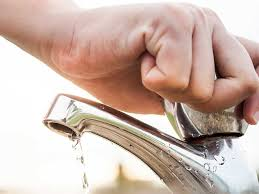

¿CÓMO CUIDAR EL AGUA?
EN EL HOGAR:
Cerrar la llave mientras te cepillas los dientes o te enjabonas las manos.
Reparar fugas de grifos,inodoro y tuberías. Una fuga puede desperdiciar miles de litros al año.
Usar regaderas de bajo consumo y reducir el tiempo de ducha a 5 minutos.
Lavar ropa y trastes con carga completa para optimizar el uso del agua.
Reutilizar agua siempre que sea posible, como usar el agua de enjuague de verduras para regar plantas.

Página principal